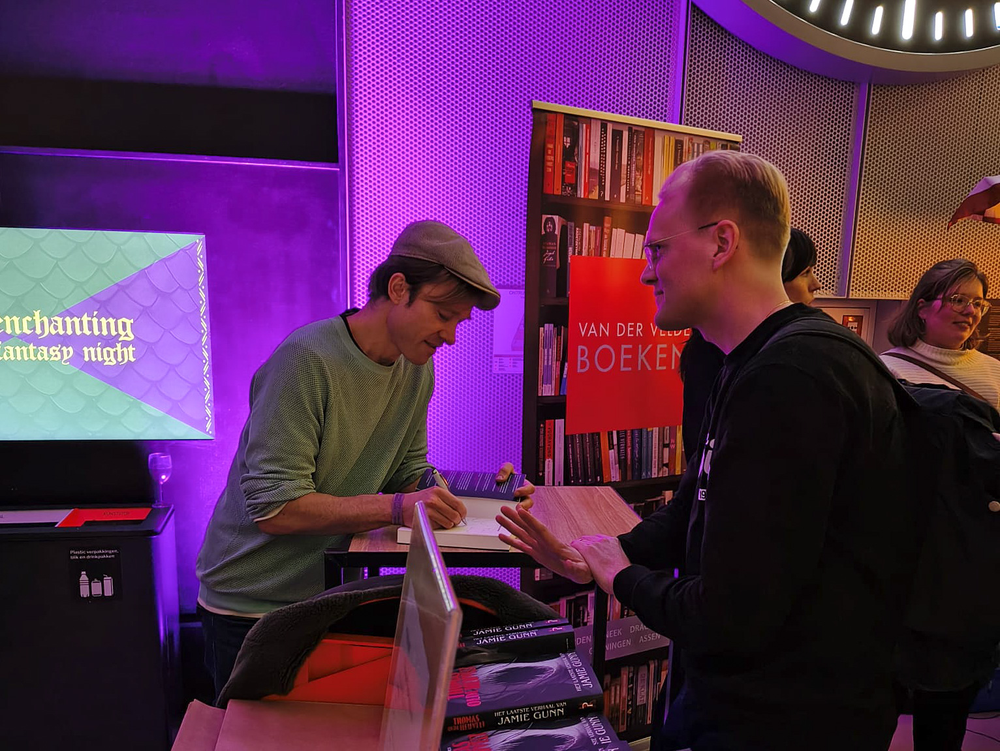

Een masterclass write what you know met Thomas Olde Heuvelts Het laatste verhaal van Jamie Gunn
juni 2026
“Met mijn medestudenten had ik ook al weinig op. Hun devies leek te zijn: schrijf over wat je kent. Dat resulteerde in een bekrompen, door jaloezie verteerd navelstaren.”
Het laatste verhaal van Jamie Gunn — Thomas Olde Heuvelt (2025)
Afgelopen winter was ik in Groningen bij Epic & Enchanting: a Forum Fantasy Night. Een avond gevuld met lezingen, workshops, voorstellingen en kraampjes rond alles wat met het fantastische genre te maken heeft.
Een hoogtepunt van de avond was het interview met Thomas Olde Heuvelt, waarin hij vertelde over zijn nieuwe boek, maar ook openhartig sprak over het verlies van zijn vader en een angstaanjagende ervaring met een stalker. Houd deze dingen in het achterhoofd; ze komen later in dit stuk terug.
Toch strookt dat niet met het succes van speculatieve fictie. Dracula, Frankenstein, 1984, Harry Potter en In de Ban van de Ring bewijzen het tegendeel. Het gaat hier om een schijntegenstelling.

In lijn met George R.R. Martin denk ik dat write what you know vaak verkeerd wordt geïnterpreteerd.
“Did you ever remember losing a loved one? Even if it's only a dog that you loved as a child or something. Tap that vein of emotional energy. In some ways, it's not terribly different from what method actors do....
We observe other people from the outside. The only person we ever really know inside and out is ourselves, and we have to reach into ourselves to find the power that makes great fiction real.”
Als we het citaat hierboven van Jamie Gunn nog eens lezen, zien we dat het personage zich afzet tegen de autobiografische interpretatie van write what you know.
Voor schrijvers, zij het fantasy, SF of welk genre dan ook, kan ik dit boek van harte aanbevelen. Bukowski schreef wat hij had meegemaakt. Martin schreef wat hij had gevoeld. Olde Heuvelt doet beide. Juist daarom is Het laatste verhaal van Jamie Gunn een masterclass in het toepassen van write what you know.